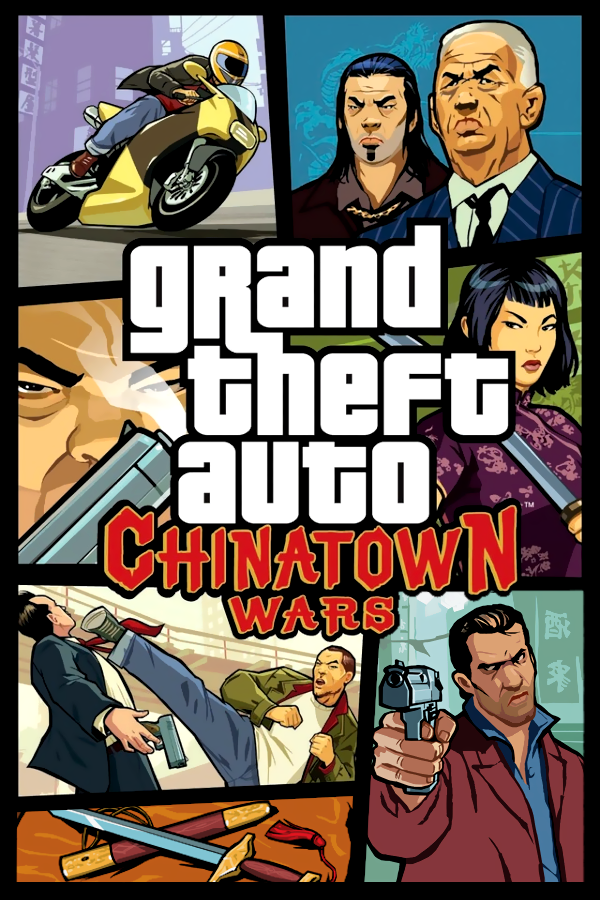

Grand Theft Auto: Chinatown Wars
Grand Theft Auto: Chinatown Wars
Details
|  | |
| Playtime | Not Played |
| Last Activity | Never |
| Added | 5/7/2025 1:28:02 |
| Modified | 5/7/2025 1:28:54 |
| Completion Status | Not Played |
| Library | Playnite |
| Source | Steam |
| Platform | $PC (Windows) |
| Release Date | 3/17/2009 |
| Community Score | |
| Critic Score | 92 |
| User Score | |
| Genre | Action-adventure |
| Developer | Rockstar Leeds Rockstar North |
| Publisher | Rockstar Games |
| Feature | Multiplayer Single Player |
| Links | Wikipedia Official website |
| Tag | [People] artist: Dan Roberts [People] artist: Ian Bowden [People] producer: Gordon Hall [People] producer: Leslie Benzies [People] programmer: Al Dukes [People] writer: Dan Houser [People] writer: David Bland |
Description
Grand Theft Auto: Chinatown Wars is a 2009 action-adventure game developed by Rockstar Leeds in conjunction with Rockstar North and published by Rockstar Games. The game was released for the Nintendo DS in March 2009, PlayStation Portable in October 2009, iOS in January 2010, and Android and Fire OS devices in December 2014. It is the thirteenth game in the Grand Theft Auto series and a follow-up to Grand Theft Auto IV, and is the first entry to be released for handheld consoles since 2006's Vice City Stories. Set within modern-day Liberty City (a fictional satire of New York City), the single-player story follows young Triad member Huang Lee and his efforts to recover a sword gifted by his late father after it is stolen from him, while inadvertently becoming caught in a power struggle amongst Liberty City's Triads.
The game was fundamentally designed for players to have notable interactions with objects on the DS and smartphone systems via their touch-screen controls, while offering unique elements of gameplay not found in other entries within the Grand Theft Auto series. The most notable element, the ability to buy drugs from suppliers and sell them to dealers to make money, proved controversial following the game's release. Despite this, the game received critical acclaim.
Gameplay
Grand Theft Auto: Chinatown Wars is an action-adventure game set in an open world environment. It has a different presentation from previous games in the series, by partially resembling the first Grand Theft Auto titles. Instead of a ground-level view behind the protagonist or a top-down perspective, Chinatown Wars uses a fully rotatable camera angled down at the action. Chinatown Wars also uses cel-shaded polygons with black outlines to produce a comic book-like aesthetic—a first for the series. The title takes place in a scaled-down rendition of Grand Theft Auto IV's Liberty City, with the exception of Alderney.
Unlike Grand Theft Auto IV, the player can lose wanted stars by destroying police cars to escape the police instead of leaving a "wanted zone". The more stars the player has, the more police they have to take out for each level. For example, for a six star level, they have to take out six police cars to get down to a five star wanted level and so on. There is also a drug dealing sub plot which allows players to peddle heroin, acid, ecstasy, marijuana, cocaine and depressants around the city. Players can make a profit by recognising market conditions and demands based on geography and plying their wares accordingly. CCTV cameras work as this game's secret packages, destroyed by throwing a Molotov cocktail bottle or a grenade. This also decreases the chances of being caught while making a drug deal and provides discounts for buying drugs. Chinatown Wars applies many Grand Theft Auto IV features such as the next-gen HUD. Ammu-Nation returns in the form of an in-game website where the player can order various weapons through their PDA to be delivered to their safehouse. Players will also get emails which they can read either from the PDA or the laptop present in their safe house.
While stealing a moving vehicle is much similar to that of previous Grand Theft Auto games, Chinatown Wars uses a different system for stealing parked vehicles. Depending on the car, it can be started in one of a few ways. Older cars require a few turns of a screwdriver in the ignition, while other cars require hotwiring. Newer, more expensive cars (with the exception of a bulletproof van) require the player to "hack" the computerised immobiliser. It is still possible to flip cars or set them on fire. The player is unable to pilot any of the aircraft in the game, but he can still see the ones at the airport or flying above him, although if a player uses a certain code on the Nintendo DS by using "Action Replay DS" the player can acquire a helicopter and fly it.
Platform differences
- The Nintendo DS version of the game takes advantage of the touchscreen with functions such as controlling the PDA, GPS, the radio, access to the people on the map, or using Molotov cocktails and grenades. The top screen shows the game and storyboard. Taxi whistling is supported by the DS microphone or by holding the X button. Competitive and co-operative multiplayer modes are only available through DS to DS local wireless.
- The PSP version features updated graphics, which are no longer cel-shaded, thus sporting a more "classic" look akin to previous games in the series (however, cutscenes are stylistically identical). Minigames (such as drawing tattoos, unscrewing the car and boom panels) have been adapted from their touch-screen functionality to simpler, QTE-like minigames. The PSP version also features extra missions and exclusive radio stations not found in the Nintendo DS version. However, PSP multiplayer supports only 2 players. There's an additional character named Melanie Mallard who's an independent news reporter working with one of the main characters of the game. Melanie and her missions are absent from other platforms.
- The iOS and Android versions of the game, based on the PSP version, includes on-screen touch controls and mini-games that have been adapted to work well with capacitive touchscreens. Both iOS and Android versions have the same radio stations as the PSP versions, though the iOS version features a custom radio station that uses the iTunes library.
Plot
In 2009, Triad member Huang Lee travels to Liberty City to deliver the Yu Jian sword—a family heirloom won in a card game by his father who was recently murdered in Kowloon—to his uncle Wu "Kenny" Lee. Upon arrival, Huang's escort is killed by unknown assailants, who steal the sword and leave Huang for dead. Surviving, he makes his way to Kenny's restaurant and informs his uncle of the theft. Kenny, outraged at the news, reveals that he intended to hand the sword to Hsin Jaoming, the elderly head of the Liberty City Triads, in order to secure his position as his successor. Feeling dishonoured for losing Yu Jian, Kenny instructs Huang to assist in keeping his businesses afloat while he is in the city, causing him to be slowly drawn into the drug trade. While helping his uncle, Huang learns that two others are competing to become Hsin's successor—his sleazy son Chan Jaoming, and a ruthless deputy Zhou Ming—and finds himself working for both men in addition to Kenny.
During a job, Huang is intercepted by Wade Heston, a corrupt LCPD detective under observation by Internal Affairs, who offers to assist him in finding Yu Jian, believing that apprehending the thieves will clear his reputation and get internal affairs off his tail. Huang agrees and helps Heston investigate a Korean gang that is allied with the Triads, which the latter suspects to be behind the sword's theft. After bugging the Koreans' headquarters, the pair learn that there is a splinter group within the gang called the Wonsu Nodong, whose leader has been causing problems for the Triads with the help of an informant.
Meanwhile, Hsin contacts Huang for assistance, concerned about the news of an informant within his syndicate, and orders him to investigate two former Triad allies who Hsin is suspicious about – the Korean Midtown Gangsters and the Angels of Death who are an outlaw motorcycle club. In the process, Huang is forced to deal with a Triad-hating mafioso named Rudy D'Avanzo who tried to deceive him but kills him when he learns of this deception. Huang helps Heston with several jobs for his Federal Investigation Bureau (FIB) contact, who offered to assist them with their investigation. Hsin soon becomes annoyed with Huang's slow progress and believing he might be the informant, tries to have him killed. Kenny intervenes to save his nephew's life, and persuades Hsin to give Huang more time to find the true informant. Through Hsin's private detective Lester Leroc, Huang eventually discovers that both the Koreans and Angels are innocent. Meanwhile, Heston is forced to back down due to pressure from internal affairs, leaving Huang to hack into the FIB servers to retrieve some files which name both Zhou and Chan as police informants.
After discussing his findings with his uncle, Kenny convinces Huang that they must be given to Hsin. Out of disgrace at the possibility his son is betraying the Triads, Hsin steps down as leader and names Kenny his successor. Meanwhile, Huang is tasked with killing Zhou and Chan, though both deny the accusations against them before dying. Heston later contacts Huang with news that the information he retrieved was fake and that the Wonsu leader is meeting with his allies, including the informant. Upon spying on the meeting, Huang is shocked to discover Kenny is the Wonsu leader and orchestrated the theft of Yu Jian. As the LCPD and FIB ambush the meeting, Kenny makes his escape, but Huang and Heston pursue him to Hsin's penthouse.
Upon confronting his uncle, Huang learns that Hsin had ordered Kenny to retrieve Yu Jian in exchange for a position underneath Chan. Kenny complied and killed Huang's father to inherit the sword, but later had Yu Jian stolen to keep himself from such a dishonourable position. He also secretly worked to undermine Hsin's leadership and take over, while framing Zhou and Chan to cover his tracks. After Kenny stabs Hsin with Yu Jian, he is in turn killed by Huang thus avenging his father's death. Hsin praises Huang for his loyalty and offers to name him the next Triad boss. Before Huang responds, the LCPD and FIB arrive at the scene. Heston assumes control of the situation and arrests Hsin and lets Huang go, who's in despair after seeing the situation.
Soundtrack
Music for the opening titles of gameplay is the track "Chinatown Wars" performed by Ghostface Killah and MF Doom and produced by Oh No of Stones Throw Records.
The DS version of the game features music by Deadmau5 among others. On top of the soundtrack featured in the DS version of the game the PSP version features music by Anvil, Tortoise, DFA Records, Turntables on the Hudson and DJ Khalil.
The iOS and Android version featured all the music from the DS and PSP version and allowed the player to customise a music playlist using songs from their music library.
Development
On 15 July 2008, at a Nintendo press conference, it was announced that Grand Theft Auto: Chinatown Wars would be released on the Nintendo DS in the following winter. The game contains over 900,000 lines of "hand-optimized" code.
Release
Marketing
In the GameStop pre-order commercial for Grand Theft Auto: Chinatown Wars, the dialogue referred to the real-life corporate bailout in 2008. A new gameplay trailer was released on 6 March 2009, showing gameplay involving using a sniper rifle and interacting with keypads with the Nintendo DS' stylus. GameStop had a promotion where they sent around a van letting people try the game before it was released. Other stores gave away a "credit card" which activates $10,000 of in-game money and earlier access to better weapons. Amazon provided a code to unlock an exclusive bulletproof Infernus with preorders.
At the 2009 Spike Video Game Awards, Grand Theft Auto: Chinatown Wars received the Best Handheld Game award. However, the version wasn't specified. It also won the Best Nintendo DS Game of 2009 Award from GameSpot. The game was nominated for three of GameSpot's awards: Game of the Year, DS Game of the Year and Action Game of the Year, winning DS Game of the Year. Chinatown Wars was nominated for Game of the Year by Nintendo Power, as well as Nintendo DS Game of the Year, Best Nintendo DS Graphics and Best Adventure Game. Pocket Gamer awarded the game Best Action/Arcade Game for handheld, Game of the Year for handheld and Overall Game of the Year in 2010.
Controversy
Chinatown Wars continues the series' tradition of controversy because of a drug dealing minigame that includes heroin and ecstasy. Protesters against the game include Darren Gold of the anti-drug abuse charity Drugsline, who stated: "Anything using drug-dealing as entertainment is sending out the wrong message. Glamorisation doesn't help our work trying to educate kids of the dangers of substance misuse." In an interview with Edge magazine, Dan Houser said "we wanted to have a drug-dealing mini-game in lots of the GTA games. [...] We played with it a little in Vice City Stories, because it worked really well juxtaposed with the main story. It works well with what GTA is, with driving around the map, and it gives you another thing to think about – another layer or piece of the puzzle to keep you motivated... It does intersect with the main story and things you learn from it work with the story, but it mostly runs on its own."